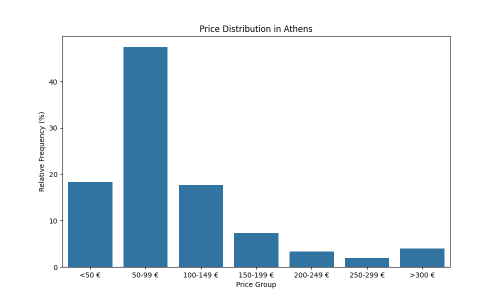
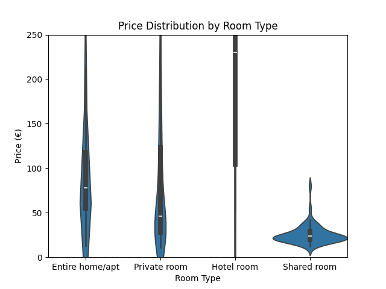
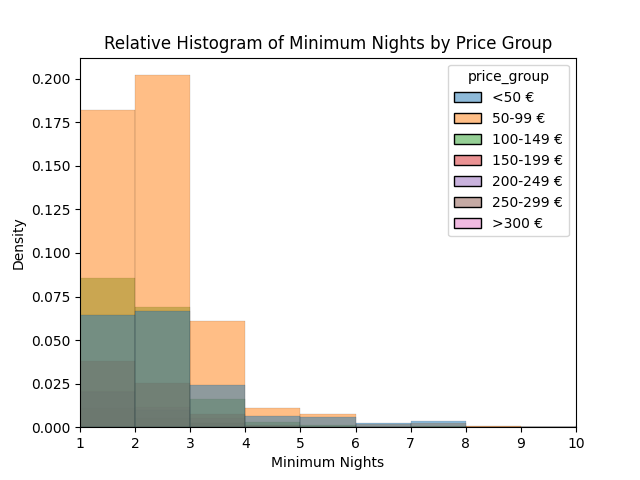
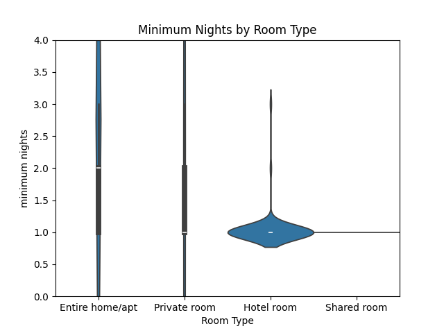
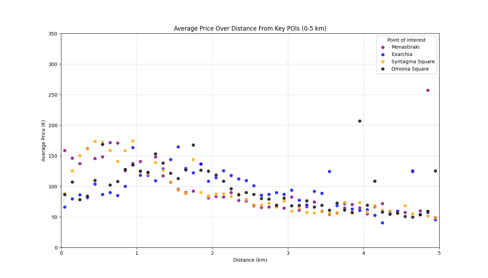

Introduction
Athens, the vibrant capital of Greece, is experiencing an unprecedented tourism boom. However, this success also brings profound social and urban challenges: rising rents displace the local population, while the heterogeneous social structure continuously redefines the attractiveness of city neighborhoods. In the following, I present the results of my data analysis, which focuses on the price distribution by accommodation type and, in particular, the factors influencing price developments in relation to geographical distribution.
Price Distribution of Airbnb Properties
The diagram above shows the general price distribution in Athens. Fundamentally, Athens is an affordable city with a clear focus on the €50-99 per night price range.
Looking at the price distribution by room type (Entire Home, Private Room, Hotel Room, and Shared Room), there is a clear shift in the lowest median price towards Shared Room properties. These are followed by Private Rooms, then Entire Homes, and finally Hotel Rooms. Shared Rooms account for the overwhelming majority of accommodations priced under €50 per night.
Short-term or Long-term Rentals?
A key question is whether Airbnb hosts are more interested in long-term or short-term rentals, and if there are differences across various price ranges.
There is a clear focus on 1-3 night rentals for the lower price categories of <€50 and €50-99. This may be due to Athens' position as the country's central hub, which necessitates short-term stays for locals for various errands.
Upon examining the individual accommodation types, it becomes clear that Shared Rooms are exclusively rented with a minimum of one night's stay, Hotel Rooms predominantly so. For Private Rooms and Entire Apartments, the distribution is more varied.
How Does Distance to Key Locations Affect Price Levels?
The geographical analysis will focus on four Points of Interest (POIs), which I will briefly characterize:
- Monastiraki: Monastiraki forms the pulsating heart of historic Athens, located directly below the Acropolis. It is known for its lively flea market, historic buildings, countless shops, cafes, and restaurants. As a central transport hub with metro access, it is a gateway to many ancient sites. Monastiraki is Athens' tourist hotspot.
- Exarchia: Located north of the city center, Exarchia has historically been an intellectual, student, and anarchist neighborhood. It is known for its alternative cultural scene, independent bookstores, political murals, and strong community spirit, but also for occasional social unrest and protests. A neighborhood with a strong identity of its own and increasing pressure from tourism and gentrification.
- Syntagma Square: Syntagma Square is the political, administrative, and representative center of Athens. The Greek Parliament is located here, surrounded by large hotels, banks, and international brands. It is a place for national ceremonies and political demonstrations.
- Omonia Square: Omonia is a historically important transportation hub and was once a glamorous center of the city. In recent decades, however, the square has experienced a significant decline, associated with social problems and a decrease in its attractiveness. Current investments and revitalization efforts aim to revive the square.


The areas around Omonia and Exarchia have a lower average price than the areas around Monastiraki and Syntagma. The country's tourist and political center leads to higher price levels.
For better comparison, the individual plots are summarized in an overview plot:
The convergence of prices from a distance of approx. 3 km is due to the fact that the individual neighborhoods are very close to each other, leading to overlap effects very early on.
Local Distribution of High and Low-Class Accommodations
The two maps below show the four POIs, with one map displaying the most expensive 15% and the other the cheapest 15% of accommodations. There is a clear distinct distribution around the inner city ring and the area between Monastiraki, Syntagma, and the Acropolis. The two maps are interactive and can be moved and zoomed – feel free to try it out!
Visualization of the most expensive and cheapest 15%:
15% High Price Venues:
15% Low Price Venues:
Conclusion
The analysis of Airbnb data in Athens reveals a multifaceted picture of the local tourism market.
Athens presents itself as a comparatively affordable travel destination, with a price focus in the mid-range segment, where Shared Rooms particularly appeal to budget-conscious travelers. The data shows a clear focus on short-term rentals (1-3 nights), indicating high dynamism and guest turnover.
Geographically, prices are strongly linked to location: tourist and political centers like Monastiraki and Syntagma have higher prices, while Omonia and Exarchia offer more affordable options. The price distribution maps illustrate the gentrification of core areas, where high-priced accommodations are concentrated, while more affordable options are found on the city's outskirts or in less touristy neighborhoods.
In summary:
The Airbnb data reflects the tourism boom in Athens, which, while offering a wide range of accommodations, also poses social challenges. The conversion of residential space for tourist use, especially in the city center, could, in the long term, impair diversity and affordability for the local population. Finding a sustainable balance between tourism promotion and urban quality of life remains a key task for Athens' urban development.